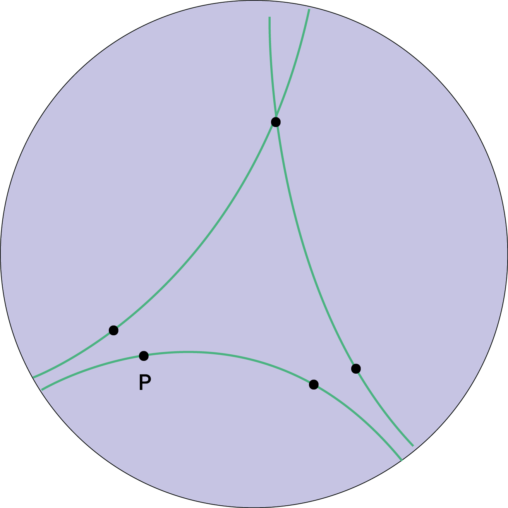
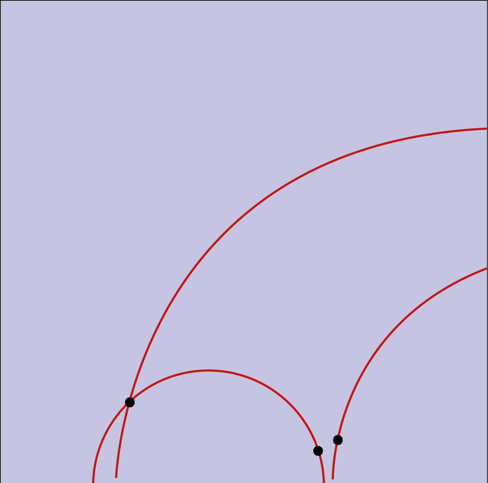
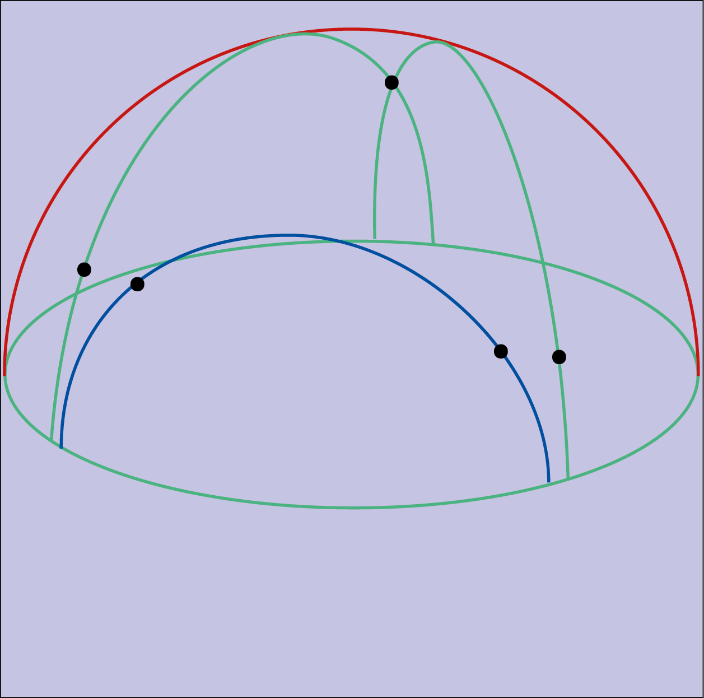
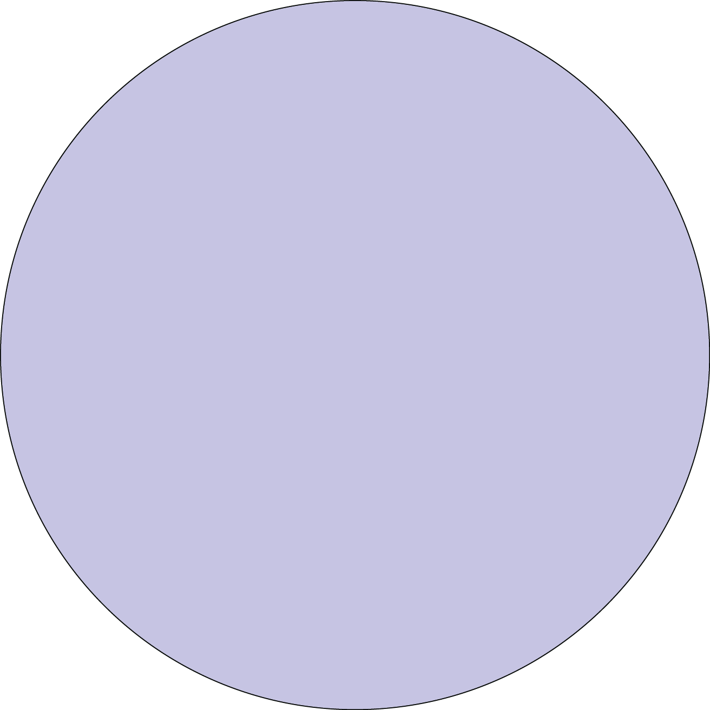

PERFORMANCE AS TEXT:
NEURO-PLASTICITY
A person walking on a treadmill with headphones on — wouldn’t carry the load.
Entering the white exhibition space, I had originally thought that the physical, active body, would somehow give an extra sense to the space. Yet a tread- mill walking person would either bring dynamic or distraction. A bit like meeting an ex-lover of your current partner at a party. The ever-relating reminds me of the contemporary dance exercise called triangulation, in which you choose two people in a group from which you always keep the same distance, forming the perfect equal-sized-triangle. The two others also pick two; an endless conglomerate of adjusting relation is set in motion.
It would feel a bit like that, I thought, to have a person walking a treadmill for hours on end. You’d come in as a visitor, and a little cable of awareness would be spun between you and that walking person, that aside from walk, can also see you, it becomes this spirally feeling of eyes-on-your-back, while you’re looking at something else I put there, on the floor, or hanging from a metal hanger in space, and you’d wonder “what is that?”, and you might get disturbed — you get it.
Yet what would be really lost, is what I most wanted to share. The headphones would look like a part of the running gear, less present than the treadmill in the exhibition space. Yet in them, from them, sweet tunes would sway and alter my brain’s neural pathways and synapses. The headphones would, through sound waves, influence my muscular memory. My brain would be engaging in Performance as text: Neuro-plasticity – synaptic pruning, (how good does that sound?) deleting the neural connections that are no longer necessary or useful, and strengthening the necessary ones. That’s really what I wanted to point at, rather than the odd triangle of attention spiraling I may have caused walking.
Outside, in the spring-shed garden, there would be bottles hanging from the trees. Clear glass bottles, with stems of blossom in them, and over time fruit would grow in the bottle, like the liquor they sell but buyers rarely drink because it’s so beautiful.
The other day I read about nicotine imitating neurotransmitters’ functions, and how it thus — influences you somehow.
I was thinking about neurotransmitters being a fluid, that transmits the electric charge of one neuron firing to the next. Thinking of it as a fluid, it sounded so free, freely moving, always in motion, yet fluid can also just mean that it takes the shape of its container.
That made me think of the in-bottle- growth again.



